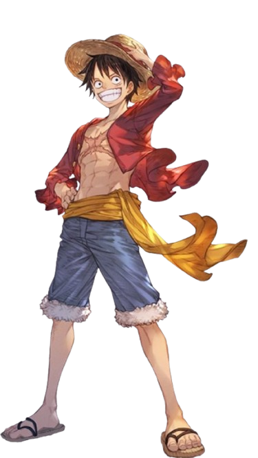
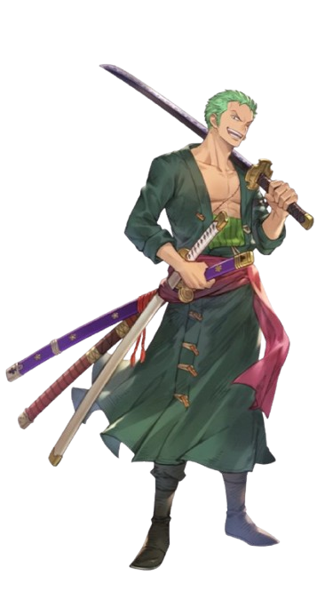
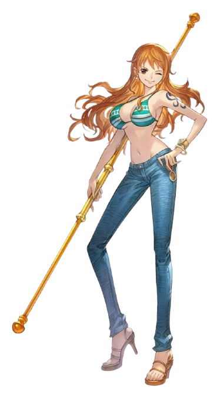
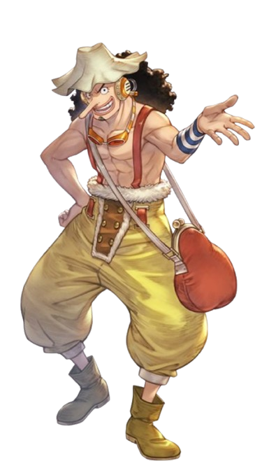
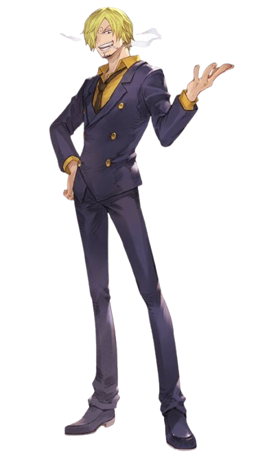
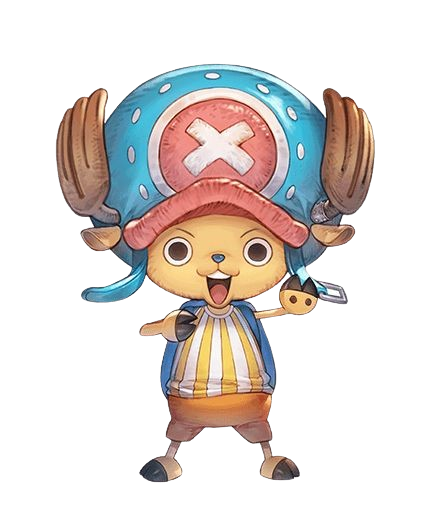
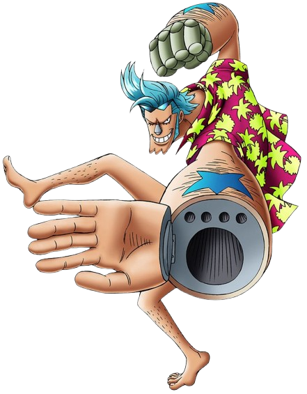
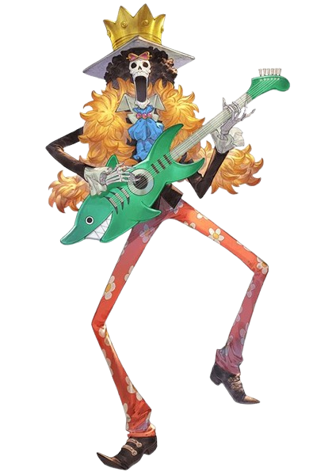
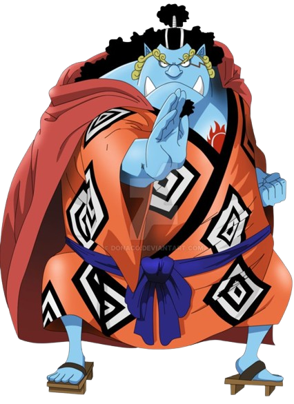

Mon
key
D.
Luffy

3.000.000.000
Occupation : Pirate Captain
Age : 19 (after timeskip)
Origin : East Blue (Foosha Village)
Roro
noa
Zoro

1.111.000.000
Occupation : Master Swordsman
Age : 21 (after timeskip)
Origin : East Blue (Shimotsuki Village)
Na
mi

366.000.000
Occupation : Navigator
Age : 20 (after timeskip)
Origin : East Blue (Cocoyasi Village)
God
Us
opp

500.000.000
Occupation : Sniper
Age : 19 (after timeskip)
Origin : East Blue (Syrup Village)
Vin
smoke
Sanji

1.032.000.000
Occupation : Chef
Age : 21 (after timeskip)
Origin : East Blue (Germa Kingdom)
Tony
tony
Chopper

1.000
Occupation : Doctor
Age : 17 (after timeskip)
Origin : Grand Line (Drum Island)
Nico
Robin
930.000.000
Occupation : Archaeologist
Age : 30 (after timeskip)
Origin : West Blue (Ohara Island)
Fran
ky

394.000.000
Occupation : Shipwright
Age : 36 (after timeskip)
Origin : South Blue (Water Seven)
Bro
ok

383.000.000
Occupation : Musician
Age : 90 (after timeskip)
Origin : West Blue (Namakura Island)
Jin
be

1.100.000.000
Occupation : Helmsman
Age : 46 (after timeskip)
Origin : Grand Line (Fishman Island)